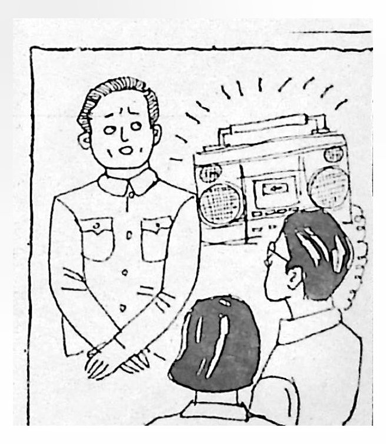

贾□ 《人事》1987年第10期（总第25期），封三
梦试（插图）
A Test in a Dream (inset drawing)
- Passage illustrated
——请说出十五名市委机关的一般干部、职工的姓名、工作单位。不够十名者不给分。——梁峻，我的秘书。小严，我的司机。小王，我的公务员。
“Please name fifteen ordinary cadres and staff of the municipal Party committee offices, with their work units. Fewer than ten scores zero.” “Liang Jun, my secretary. Little Yan, my driver. Little Wang, my orderly.”From the short story 梦试 (“A Test in a Dream”) by Yang Yuchuan, on the same page. 杨玉川《梦试》（小说），同页
- Description
- Illustration for the story: the official stands stiffly, hands clasped, as a cassette recorder fires questions at him and two examiners look on.
- Artist
- Jia □ 贾□
- Published in
- 《人事》1987年第10期（总第25期）, inside back cover
- Themes
- Formalism · Story illustrations

Cite
Jia □, “梦试（插图）” [A Test in a Dream (inset drawing)], Renshi (Personnel) 《人事》, 1987, no. 10, inside back cover.